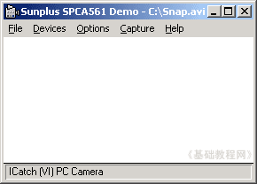
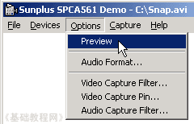
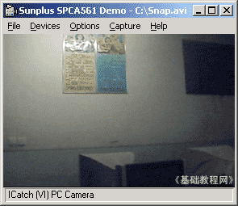
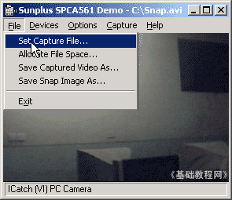
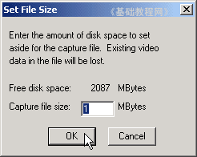
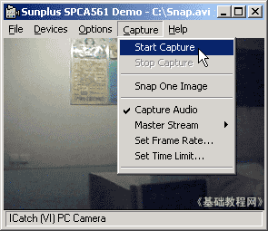
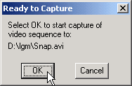
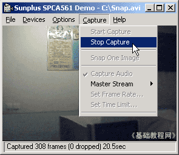

视频编辑 基础入门教程
二、录制视频1 返回目录
视频文件一般可以从光碟中获得，也可以自己录制，或者从网上下载（注意版权）,
录制视频可以用数字摄像机，或摄像头一类的设备，我们来学习一下摄像头；
1、启动视频软件
1）录制视频的软件有多种，像摄像头自带的amcap程序，WinXP自带的Windows Movie Maker等，
我们先来练习一下摄像头自带的，点“开始－所有程序－PC Camera－Amcap”；
2）进入后出现一个空白窗口，这时候还没开始录制，菜单是英文的；

3）点菜单“Options－Preview”命令，这时候摄像头灯闪亮，窗口中出现画面；

Preview是预览的意思，也就是提前查看一下效果；

2、录制视频文件
1）点菜单“File－Set Capture File..”命令，在出来的对话框上边选择一个文件夹，在下面给视频文件起个文件名，
点“打开”按钮后，出来一个文件大小，直接点“OK”按钮，默认的是存放在C:盘，文件名是Snap ；
 
2）准备好以后，点菜单“Capture－Start Capture”命令，出来一个确认对话框，点“OK”开始捕获视频，
这时窗口下边的状态栏，有数字在不断滚动，表示正在录制；
 
3）录制好了以后，点菜单“Capture－Stop Capture”，停止录制，下面的数字也停止了，到存放的文件夹里去可以找着录好的文件；

由于是没有压缩的视频格式，因此文件的体积很大，还需要进一步的压缩处理；
本节学习了用Amcap录制视频文件的基本方法，如果你成功地完成了练习，请继续学习下一课内容；
本教程由86团学校TeliuTe制作|著作权所有
基础教程网：http://teliute.org/
美丽的校园……
转载和引用本站内容，请保留作者和本站链接。